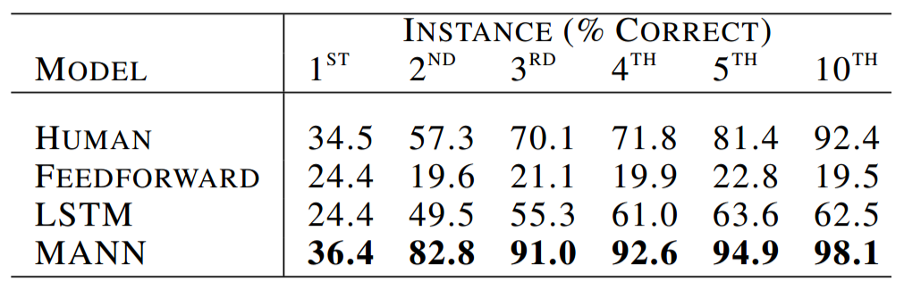
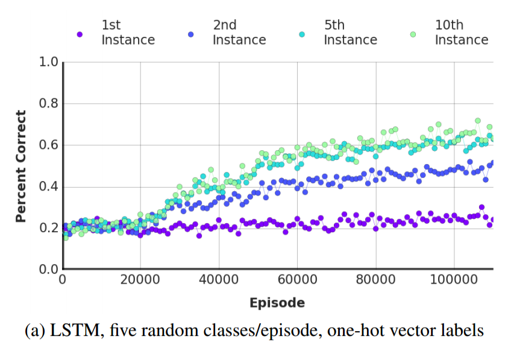
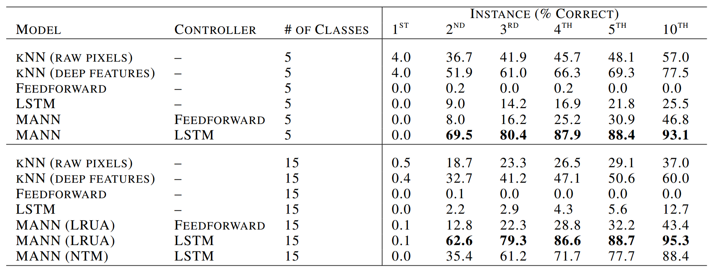
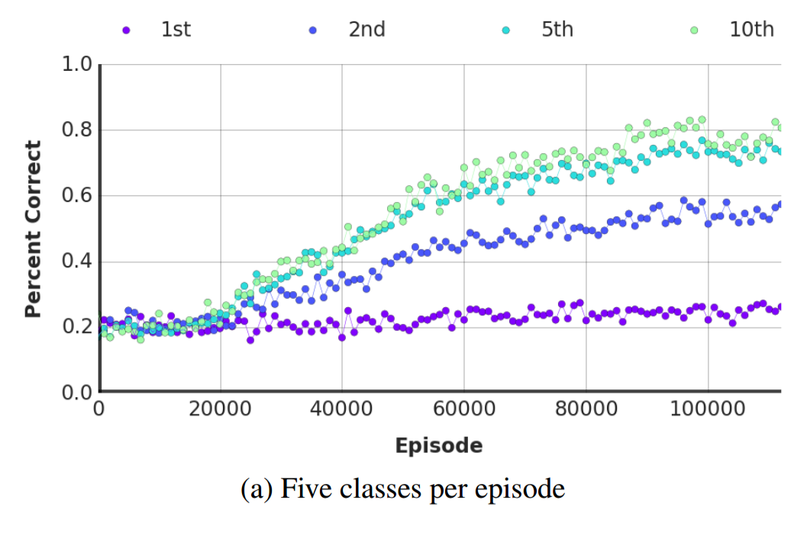

I've found that the overwhelming majority of online information on artificial intelligence research falls into one of two categories: the first is aimed at explaining advances to lay audiences, and the second is aimed at explaining advances to other researchers. I haven't found a good resource for people with a technical background who are unfamiliar with the more advanced concepts and are looking for someone to fill them in. This is my attempt to bridge that gap, by providing approachable yet (relatively) detailed explanations. In this post, I explain the titular paper - One-shot Learning with Memory-Augmented Neural Networks.
In my last post, I criticized this paper as poorly motivated. After taking time to crystallize my thoughts and to email the authors, I'm less critical of it now, but I still have a few concerns. My goal is to try explaining the paper and my concerns in tandem.
Motivation
In an earlier post, I wrote about the need for massive amounts of data to train deep neural networks. In contrast, humans require comparatively little data to learn a new behavior, or to rapidly shift away from an old behavior. For example, after running into a handful a street signs, the modern teenager quickly learns to be careful texting while walking. As Santoro et al. write, "This kind of flexible adaptation is a celebrated aspect of human learning (Jankowski et al., 2011), manifesting in settings ranging from motor control (Braun et al., 2009) to the acquisition of abstract concepts (Lake et al., 2015). Generating novel behavior based on inference from a few scraps of information – e.g., inferring the full range of applicability for a new word, heard in only one or two contexts – is something that has remained stubbornly beyond the reach of contemporary machine intelligence."
The term one-shot learning has been introduced to capture this phenomenon of rapid behavior change given only a small number of experiences, or even just one experience. In an earlier paper, a neural network was given an external memory and the ability to learn how to use its new memory in solving specific tasks. This paper classifies that previous model, the Neural Turing Machine (NTM), as a subclass of the more general class of Memory-Augmented Neural Networks (MANNs), and suggests an alternative memory system capable of outperforming humans in certain one-shot learning tasks.
Background
If you haven't read the NTM paper or my walkthrough of it, set this aside and go read one (or both). Since a MANN is a modified NTM, understanding NTMs will help in understanding MANNs.
Intuition
The goal is to modify a NTM to excel at one-shot learning. To accomplish this, the authors modify the NTM's controller's memory access capabilities. However, the paper is rather terse in justifying their specific change. A NTM controller is capable of using content-based addressing, location-based addressing or both, so when Santoro et al. suggest using a pure content-based memory writer, I was confused why this would offer any improvement. The only explanation the paper offers is that "[The NTM's memory access method] was advantageous for sequence-based prediction tasks. However, this type of access is not optimal for tasks that emphasize a conjunctive coding of information independent of sequence."
To their credit, three of the four authors I emailed wrote back in less than a day with more detailed explanations. The answer is that there's a tradeoff when training memory-augmented networks; more sophisticated memory access capabilities are more powerful, but the controller requires more training. Santoro et al. propose hamstringing the controller's ability to write to memory using location-based addressing so that the controller will learn more quickly. They point out that location-based addressing isn't necessary to excel at one-shot learning. Only content-based addressing is needed as there are only two actions the controller might need to do for a given input. One option is that the input is very similar to a previously seen input; in this case, we might want to update whatever we wrote to memory. The other option is that the input isn't similar to a previously seen input; in this case, we don't want to overwrite recent information, so we'll instead write to the least used memory location.
The authors call this hamstrung memory system the Least Recently Used Access (LRUA) module. What confused me at first is that Santoro et al. describe the LRUA as "a pure content-based memory writer," and then in the same sentence, state that the LRUA will write "to either the least used memory location or the most recently used memory location," which sounds an awful lot like location-based addressing. I reconciled the discrepancy when I realized that the most recently used memory location is determined by which memory location was most recently read, and reading is determined using content similarity.
Mathematics
Reading
Just like the NTM, for a given input $x_t$ and memory matrix $M_t$ with $R$ rows and $C$ elements per row, the controller will read from memory a length-$C$ vector $r_t$ that is a linear combination of the memory's rows $M_t(i)$ scaled by a normalized read-weight vector $w_t^r$.
The read-weight vector is almost identical to the NTM's content weight vector. For a given input $x_t$, the controller will produce a key $k_t$. As with the NTM, this key will be compared against each row $M_t(i)$ in memory using the cosine similarity measure $K(\cdot, \cdot)$. A similarity measure is "a real-valued function that quantifies the similarity between two objects" (in this case two vectors). Cosine similarity is based on the angle between the two vectors, and is thus advantageous because it doesn't depend on the magnitude of the vectors (which may vary).
The similarity measure is used to produce the read-weight vector $w_t^r$ that specifies how much each row should contribute to $r_t$. The only difference between the LRUA and the NTM is that there is no parameter $\beta_t$ to control the read-weight vector's concentration; I do not know why Santoro et al. decided to remove this parameter.
Writing
To write to memory, the controller will interpolate between writing to the most recently read memory rows and writing to the least used memory rows. If $w_{t-1}^r$ is the read-weight vector at the previous time step, and $w_{t-1}^{lu}$ is a weight vector that captures the least used memory location (more on this in just a second), then the controller can choose a convex combination of the two weight vectors using a scalar parameter $\alpha$ and the sigmoid function $\sigma(\cdot)$ to create a write-weight vector $w_t^w$:
Each row in memory is then updated using the write-weight vector and the key $k_t$ issued by the controller.
To create the least used weight vector $w_{t-1}^{lu}$, the controller maintains another weight vector, the usage-weight vector $w_t^u$, that is updated after every read and write step. A scalar parameter, $\gamma$, is used to determine how quickly previous usage values should decay:
The least used weight vector $w_{t-1}^{lu}$ is generated from the usage weight vector $w_{t-1}^u$ by setting the index of the usage weight vector's minimum element in the least used weight vector to 1, and all other elements in the least used weight vector to 0. In other words, the least used weight vector is really just an indicator vector for the smallest element in the usage weight vector. For concreteness, if the usage weight vector is [0.7, 0.25, 0.05], the least used weight vector will be [0, 0, 1].
Experiments and Results
Omniglot Classification
The first test for the LRUA MANN was a classification test using the Omniglot dataset. If you're not familiar, it's a collection of symbols from a number of different written languages, with over 1600 separate classes and only a few examples per class, making it perfect for one shot learning. To reduce the risk of overfitting, the authors perturbed the symbol images with small, random translations and rotations. They also created new classes by rotating the initial classes' images by 90, 180 and 270 degrees.
The first test involved randomly selecting five classes and then randomly assigning each class a label 1 through 5 (in practice, the class labels were one-hot vectors). The objective was to infer the label that corresponds to each class. For concreteness, the five classes could be the first five letters of the English alphabet ['a', 'b', 'c', 'd', 'e'] and the corresponding labels are [2, 5, 4, 1, 3]; each model would be shown an instance of one class, submit a guess as to what the correct label is, and then it would be informed what the true label is. This would be repeated until the model had seen 10 instances of each of the five classes.
A LRUA MANN, a LSTM and a vanilla feedforward neural network were all trained at this task. To establish a baseline, nine humans each performed the task twice. As the table below shows, the LRUA MANN outperformed its three competitors. It managed to correctly label over a third of class instances it had never seen before. The LRUA MANN learned that if a key was a poor match to keys it had seen previously, then it should try guessing a class label it hadn't already seen before e.g. if the controller sees 'd' and already knows that 'a' is 2, 'b' is 5 and 'c' is 4 and can recognize 'd' as distinct from 'a', 'b', and 'c', it should guess a new label like 1 or 3.
Below are two plots comparing the LSTM's performance against the LRUA MANN's performance (the paper doesn't explicitly state this, but the LRUA MANN used a LSTM controller) as functions of training episodes. Note that the MANN quickly learns to outperform the LSTM.

The same experiment was repeated, but with fifteen classes instead of five classes. Humans weren't included as a baseline because human working memory struggles to hold more than seven items and as the authors put it, "[trying to learn fifeen or more classes] proved much too difficult and highly demotivating." Instead, two additional models were considered. The first was a k-nearest-neighbors non-parametric model that used the raw input pixels. The second was a k-nearest-neighbors non-parametric model that instead used features extracted by an autoencoder; the autoencoder's encoder and decoder each had two 200-unit layers and a bottleneck layer of 32 units.
As before, the LRUA MANN with a LSTM controller outperformed its competitors. Interestingly, the NTM almost performed as well as the LRUA MANN, confirming the early hypothesis that by reducing the ability of the controller to write to memory, the LRUA MANN will learn faster. The LRUA MANN also continued to outperform the LSTM. both in the limit and with fewer training episodes


Gaussian Process
For the next test, the authors shifted from classification to regression. They sampled functions from a Gaussian Process (GP) with fixed hyperparameters, and then tested whether the LRUA MANN could learn to predict function values by interpolating from previously seen points. Each training episode consisted of the x-value $x_t$ and the time-offset function value i.e. $f(x_{t-1})$. As a baseline, the LRUA was compared with a Gaussian process given access to the same hyper-parameters used to generate the function. The figure below shows how closely matched the two models' predictions are.

The LRUA MANN also performed well against the GP in two and three dimensions.


Discussion
Is a MANN a meta-learner?
I think a large part of the cognitive dissonnance I experienced reading this paper was due to the introduction, which frames the MANN as a meta-learner. Meta-learning is the idea of a learning system with two collaborative learning processes that learn across different time scales: in the short term, one learning system quickly learns how to perform well at an immediate task, and in the long term, the other learning system slowly learns common structure across tasks.
The authors argue that meta-learning is a possible way to achieve one-shot learning, and then argue that memory-augmented neural networks are excellent candidates for meta-learning: "This ability [of rapid encoding, storage and retrieval] makes the NTM a perfect candidate for meta-learning and low-shot prediction, as it is capable of both long-term storage via slow updates of its weights, and short-term storage via its external memory module." However, when I think of "learning" in the context of neural networks or machine learning, I don't think of data storage; I think of updating model parameter values in accordance with newly observed data. I'm forced to ask whether storing data in external memory represents a form of short term learning, and I'm not at all confident that it does.
Memory Wiping
The earlier comparison of the LRUA MANN with the human test subjects wasn't entirely fair. In order to surpass human performance, the LRUA MANN's memory had to be wiped between episodes. Without that added code, the LRUA MANN was much less successful at beating the humans as the image below shows. The authors say that the LRUA MANN was still successful under certain setups (they specifically mention ten classes with episodes of length 75), but they don't provide the percentage of setups in which the LRUA MANN outperforms humans without the memory wipe.
Future Directions
One of the coolest parts of writing this paper's authors is that they were willing to tell me a little about future research directions. Both Santoro and Lillicrap suggested reading their recent paper, and Santoro also suggested Google Brain's recent paper as well as FAIR's slightly older paper. I'm sharing these in case readers want to continue to learn more about the topic, as this might be my last post on MANNs in the short term.
Summary
- A key feature of human intelligence, one-shot learning, refers to the ability of humans to substantially shift behavior following as little as a single experience
- Deep learning has historically struggled to achieve one-shot learning
- Memory-augmented neural networks can display one-shot learning capabilities on par with humans in specific tasks
- More advanced memory-access capabilities appear to require more training
Notes
I appreciate any and all feedback. If I've made an error or if you have a suggestion, you can email me or comment on the Reddit or HackerNews threads. I still haven't created a mailing list or integrated RSS, but I promise I'll get to it after submitting my MRes applications.